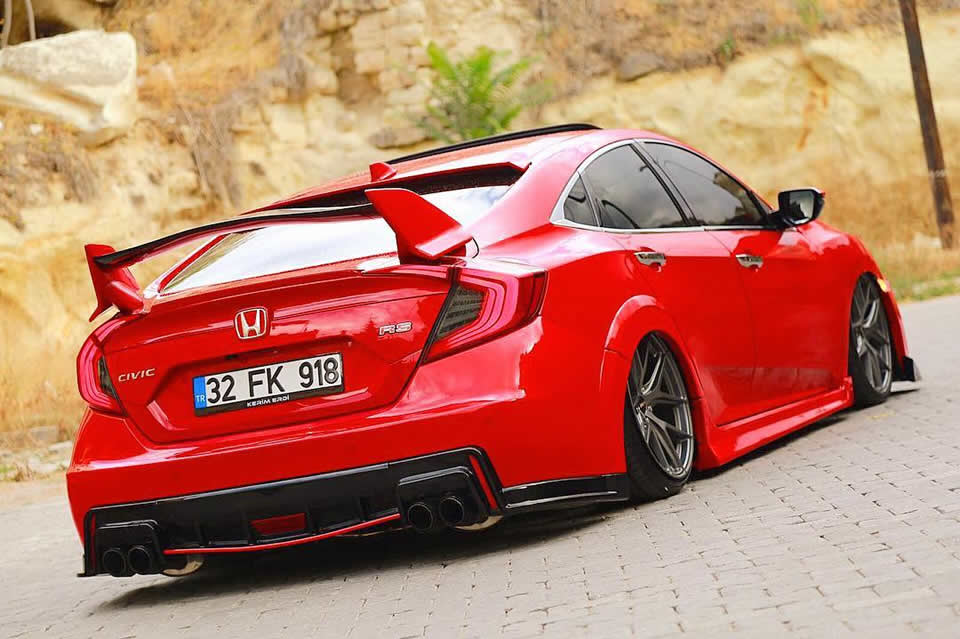

Honda 1948 yılında Soichiro Honda tarafından Japonya'da kurulmuş Japon otomotiv firması. Başlangıçta motosiklet üretimi yapan firma zamanla otomobil, su motoru, (gemi, tekne, yat vb.) robot, güç ekipmanları (jeneratör, çim biçme aleti vs.) motor (herhangi bir işte kullanılacak akaryakıtlı motorlar) ve uçak üreten bir firma haline gelmiştir. Dünyanın bir numaralı motor üreticisi olan Honda Japon otomotiv sektörünün gelişmesinde ciddi katkılar sağlamıştır. Üretimi ile geniş kitlelere hitap eden firmanın dünyada çok sayıda alıcı kitlesi vardır. Özellikle Amerika, Kanada, Hong Kong, Güney Amerika ve Asya ülkelerinin genelinde Japonya'nın ilk temsilcisi olarak dayanıklılık ve teknolojisi ile satış rekorları kırmıştır.
Merkezi Tokyo'da olan Honda, dünya çapında pek çok ülkede üretim ve satış yapmaktadır. Geçmişten günümüze motor sporlarındaki başarılarıylada ön plana çıkan Honda, başlarda Amerika ve Kanada'da üretimine başladığı Acura markası ile de ciddi başarılar yakalamıştır.
Motosiklet sektöründede yine geniş bir ürün yelpazesine sahip olan firma 1959'dan bu yana dünyanın en büyük motosiklet üreticisidir.
Ayrıca dünyada ilk kez Hava yastıklı (Airbag) motosikleti üreten firmadır.
